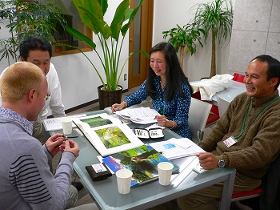
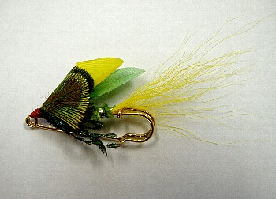
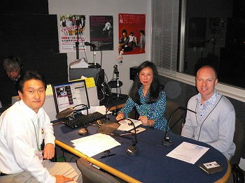
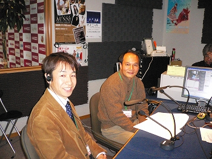

釣行日誌 故郷編
2009/11/19 ラジオの生放送に出演すること
この話は、９月１７日に釣り友達の鰐部（わにべ）さんから来た一通のメールから始まった。
こんにちは、伊藤さん。
伊藤さんに、２つお願いがあります。
１つは、１１月１９日（木）に、弊社の地元ラジオ番組 MID FM（60分）、ゲストコーナーに約20分、出演していただきたいのです。
テーマは、ニュージーランド・フライフィッシング。
もちろんボクも出ます。
夜19:30に新栄です。
ご都合いかがでしょうか？
えっ！ラジオ番組に出演？ 生放送？ と驚いたものの、次の瞬間にはすっかりやる気になってしまい、いろいろと打ち合わせが始まった。聞けば、番組の名前は、JSTワールドトラベルサテライトといい、鰐部さんの勤める旅行代理店JSTさんがスポンサーになっているそうである。
それでは、ということで、なぜニュージーランドなのか？ なぜフライフィッシングなのか？ということをレジメにまとめ、鰐部さんと番組のパーソナリティをしている青井さんに送付した。私の出番は、番組後半の８時３０分過ぎからになるらしい。
９月最後の岩魚釣りになどに出掛け、１０月には名古屋まで出掛けて車のラジオでワールドトラベルサテライトを聴いてどんな番組かを把握したりと、じたばたしているうちにあっという間に２ヶ月が過ぎ、放送当日となった。名古屋の中心部、新栄にある放送局の入ったビルに着いたのは、午後６時半であった。まだ本番まで１時間半もある。
２階の受付で訪問者用カードに必要事項を記入し、ゲストのIDカードをもらい、７階の放送局へ入る。こぢんまりとしたロビーの奥にコンパクトなスタジオがあり、その脇の控室に女性の姿が見えたので手を振ると、出てきた小柄な女性がロビーに案内してくれた。会議用の机に座り、鰐部さんを待つことにする。
７時ちょうどに鰐部さんが来て、さっそく釣りの話で盛り上がった。持参した写真集、Moods of New Zealand Fly Fishing を広げ、この川はどうの、あの湖はこうの.....と楽しい話は尽きない。忘れないうちに、鰐部さんにと持ってきた、来年の日めくりカレンダー Incredible Fishing Stories 2010 Calendar をプレゼントした。
そうこうしているうちに、本日の番組の第一部のゲスト、ニュージーランド航空名古屋支店の河野さんがスタジオに到着し、ご挨拶と名刺交換ののち、三人でまたまたNZの話題に花が咲いた。

まもなくパーソナリティの青井さんが、助っ人のニュージーランド人、コリンさんを伴って現れた。コリンさんはネーピアの出身で、名古屋で英語の先生をしているとのことであった。青井さんは女性なので、何か良いお土産はないかと考えた末、拙いタイイングの技術を駆使して、フライのブローチを作って来た。専用のブローチ用フックではなく、近所の手芸店クラフトパークで売っていた、カブトピン52mmのシルバーとゴールドを利用して、サーモンフライかウェットのようにでっち上げたものである。（笑）

これが思いのほか好評で、４本作って来たうち、青井さん、コリンさん、河野さん、鰐部さんと、全ての人にあげることができた。
コリンさんは実に流暢な日本語を話す方で、郷里ネーピアの、アールデコ様式の建築物が有名なこととか、ワインが美味しいことなどが話題となった。また、オークランドの沖にあるワイヘキ島の様子、その発展など、懐かしい話題も飛び出した。と、いつしか時間は本番10分前ぐらいになり、青井さんの用意されたレジメにしたがい、簡単な事前打ち合わせが行われた。
いよいよ本番５分前、青井さん、コリンさん、河野さんはスタジオに入り、マイクの前に座った。鰐部さんと私もスタジオ隅の椅子に腰掛けて出番を待つこととなった。

以下、青井さんの放送用原稿から引用したものと、録音から起こした文章で、当日の放送の雰囲気を味わっていただきたいと思います。
飛行機ジェツト音........
8：00PM タイトル JSTPresent!JSTWorldTravelSatellite...WorldTravelSatellite...
TM.......BG.........FO
「日本を遠く離れ旅に出て、外国で、その国の言葉や文化の違いを体験し、見聞を広げる事は、生涯忘れることのできないすばらしい経験となります。この時間は、楽しく、有意義に、海外を体験してきた方々をゲストに迎え、実際に滞在した“国の魅力”そして、"旅の魅力"について、探っていきます。
この番組は、３0年の実績で、海外旅行と留学、そして素敵な海外でのウェデイングをアレンジする、海外専門旅行会社JSTの提供で、お送り致します。
76.1MidFM"JSTWorldTravelSatellite"ジングル
AOI「11月1９日、木曜日、夜８時過ぎと、なりました。MidFM、76.1を、お聞きのみなさま、こんばんは。。。海外を中心とした“旅”情報を、ご紹介していく番組、“JSTWorldTravelSatellite“、この時間は、私、EmiAoiが、新栄にあります、MidFMの、スカイススタジオから、毎週、ライブにて、ナビゲートしていきます。
さて、この番組では、海外への“旅”がお好きなリスナーの方へ、また、自分らしく、ユニークで、新しい“旅”のスタイルを、追求してみたいなと思っていらしたあなたに...オリジナルで、オンリーワンの、“世界への旅”を、ご紹介して行きます。
毎回、このスタジオには、心のままに、オンリーワンのスタイルで、世界を巡ってきた、すてきな“旅の達人”をゲストに迎え、その方の、“旅”に対するこだわり、考え方、また、ユニークな旅の“スタイル”を伺っています。今夜は、先週に引き続き“ニュージーランドへの旅”をテーマに、お送りしていきます。
それでは、さっそく、世界中を“旅”していらっしゃる、ワールドトラベラーを、御紹介していきましょう。“JSTWorldTravelSatellite”今夜の、最初のゲストは、ニュージーランドの事ならば、この方に聞けば間違いない！という方をお招きしています。ニュージーランド航空中部日本地区営業所より、河野（こうの）弘樹サンに、お越し頂きました。
「河野さん、こんばんわ！ よろしくお願いいたします」
「こんばんわ！よろしくお願いいたします。」
「そしてですね、いつもこの番組は私一人でナビゲートしているのですが、今日はすごい助っ人が来ているんですね。ご存じの方もいらっしゃるかと思いますが、ニュージーランド出身で、バイリンガルパーソナリティとしてここ名古屋でテレビやラジオで活躍していらっしゃるコリンさんです！ コリンさん、こんばんわ！」
「キオラ！ こんばんわ！」
「河野さんは、ニュージランドの自然を愛してやまない！という方なんですが、今夜は忙しい日常を少し忘れて、ゆったりとした、ニュージーランドの大自然にふれ合う“旅”について色々と教えて頂きたいと思います。」
以下、話は進んでゆく。
・ニュージーランド南島の個人旅行の楽しさについて
・カイコウラでのホエールウォッチング、クレイフィッシュを味わうこと
・ピクトンのコテージでのシーカヤックの旅
・ペンギン、アザラシ、イルカなどの動物たちと触れ合う旅について
・南島では２番目に大きな町ダニーデン～オタゴ半島へ/ペンギン,アシカ‥と、ふれ合える旅
・手つかずの大自然を体験する旅について
・世界で一番美しい散歩道→ミルフォードトラック（クイーンズタウン経由、テ・アナウから）
・豊かな農作物を楽しむ旅について
・ワイン→ワイナリーを巡る旅（ワイヘキ島、ネイピア他）
・クイーンズタウンの町をめぐる自然保護の話題、飛行機の便数制限、生活排水の増加の抑制など
・近年特に進化しているニュージーランドのレストランのレベル、美味しいシーフードのごちそうについて
・キウィ（ニュージーランド人）の気質、ちょっとシャイで謙遜するところ
・庭先での気楽なバーベキューの楽しみ、肉が安い、ワインが美味い
・河野さんの好きなラグビー観戦の話題、オールブラックスのハカについて
河野さんエンディング
「最後に、ニュージーランドで旅をしながら、この曲を聞いてみてはいかがでしょう？という、河野(こうの)さん、おススメの曲を...」
「この曲は、ホルストの組曲“惑星”の原曲に、平原綾香が、日本語の歌詞をのせて歌うことを提案したものです。ニュージーランドの国技であるラグビー観戦に行き、ワールドカップで“オールブラックス”を応援している時よく流れていました。」
「そうなんですか。次回の世界大会“2011ラグビー・ワールドカップ”はニュージーランドで開催されるそうです。河野さん、今夜はありがとうございました。」
Music-１.河野(こうの)さんおすすめの曲平原綾香／「ジュピター」
伊藤さん／鰐部さん ※1部目のゲストの河野さんのお薦めの曲をかけている間に、席に座って位置に付く。
76.1MidFM"JSTWorldConnection"ジングル
「８：３８分になりまして、皆様には世界の旅情報をお届けする番組、JSTWorldTravelSatelliteをわたくし Emi Aoi のナビゲートでお聞き頂いております。」
「さて、この後は、ワールドコネクションのコーナーです。このコーナーでは、毎週、世界から、ユニークで、“旬”な情報を、お届けしています。今夜は、『ニュージランド』を特集してお送りをしていますので、最近の話題について、ピックアップして行きましょう。先程、ワールドトラベラーとして、ゲストに出て頂いた、ニュージーランド航空中部日本地区営業所より、河野（こうの）弘樹さんが、教えてくださった、素晴らしいニュージーランドの大自然を、ゆっくりと満喫する旅に出てみたい方は、ニュージーランド航空がお勧めですよ。
今夜はそのニュージーランド航空の話題をピックアップしました。“目覚めれば大自然”という、さわやかな、キャッチコピーのもとに運行している、ニュージーランド航空は、日本とニュージーランドを、直行便で結ぶ、唯一の航空会社として、ノンストップで、現在は週１０便を運航しているそうです。ニュージーランドには翌日の朝に到着しますから、一日をフルに行動出来るのがいいですね。
また、ニュージーランドの各都市へはもちろんのこと、オーストラリアや、南太平洋への接続もとても簡単です。そして、名古屋から、ニュージーランドへ出かける方にも、とても便利な情報がございます。現在は名古屋からの直行便はありませんが、関西空港からの直行便が出ています。来年の2010年3月27日までに、関西空港発着のニュージーランド航空をご利用の方は、なんと、名古屋から、関西空港まで、無料のリムジンバスが運行されているそうです。このバスに乗れば、とても便利で、快適に行けますね。このリムジンバスは予約をしてからお出かけくださいね。
南半球の、ニュージーランドは、これからが、ベストシーズンなんですよ！寒い日本を飛び出して、春まっただ中の、暖かいニュージーランドへお出かけしてみたい方に、更に詳しく、旅の情報をうかがってみましよう。今夜も、海外専門旅行会社JSTの国際企画室マネージャー鰐部克也さんをお迎えしています。」

「鰐部さん、こんばんは！」
「こんばんは！」
「ニュージーランドはこれから春に向かうということで、鰐部さんお勧めのアクティビティはございますか？」
「はい、僕はフライフィッシングが大好きで、もう今から、11月、12月、1月、２月にかけては、まさにフライフィッシング、鱒釣りの天国となりますので、素晴らしい絵はがきのような季節・光景の中で釣りを楽しむにはベストシーズンですね」
「そうですか。それでフライフィッシングの達人を、鰐部さんのワールドコネクションということで、今日はスタジオにお呼びしていますので、ご紹介いただけますか？」
「はい、僕の師匠でもあり、JSTのお客様でもあります、伊藤さんを今日はお招きしております」
「伊藤さん、こんばんわ！」
「こんばんわ。よろしくお願いします」
ということで、達人とか師匠とか、おおよそ実力にはそぐわない肩書きと共に紹介していただいた私は、この後、フライフィッシングとは何ぞや？とか、その愉しみ、留学時代の研究テーマであった、ホワイトベイトの魚道などについて話させていただいた。
・フライフィッシングとは？
・最初の海外釣行でニュージーランドを選んだ理由、ウェストランドの魅力
・NZへの鱒の移入の歴史、在来魚の紹介、イナンガ・ココプなど
・在来種の魚類の保護をテーマとした、学生時代の研究について
・ホームページの記事と電子メールを通じた鰐部さんとの出逢い
・ニュージーランドでのレンタカーの利用について、運転ルールなど
・釣りの秘訣－フィッシングガイドを雇うこと
・11/21（土）のニュージーランドフェアについて
「さて、毎週、夜８時からお送りしています、JSTWorldTravelSatellite、この番組の、後半部分の、"WorldConnection"のコーナーには、いつも、海外専門旅行会社JSTより、旅の達人にご登場頂き、観光、グルメ、エンターテーメントなど、とっておきの、世界の“旅情報”をお届けしております。今夜は、ニュージランドをテーマにして、様々な情報をお届けしましたが、この番組では、皆様より、“旅”に関する、ご相談もお持ちしています。こんな所に行ってみたいのだけど、お薦めのホテルや、レストランはありますか？など..“旅”に関することなら、どんなご質問、ご相談でもお受けしますよ。
JSTの、"旅の達人たち"が、お答えします。お便りの宛先は、Web上で、MIDFMのホームページにアクセスしていただいて、“JSTWorldTravelSatellite”までメールをください。また、FAXでも、受け付けています。番号は、０５２-２６４-９９１２までです。お待ちしています。」
●JSTCM
●MidFM"JSTWorldTravelSatellite"(ジングル)
エンディングトーク
今夜は、ニュージランドで、フライフィッシングをすることをとても楽しんでいらっしゃり、また、ニュージランドの地域の生態系までも研究されていた、伊藤さんをお迎えして、深いお話しを色々と伺いましたが、伊藤さんがニュージーランドで聞いた想い出の曲を聴きながらお別れしたいと思うのですが、どんな曲でしょうか？
「山下達郎さんの、いつか（Someday）という曲なんですけれど、お願いします。」
「どういう曲なんですか？」
「オークランドで、ホームステイをしていた時の、ホストマザーさんを訪ねる時に、ハミルトンからオークランドまでよく車で往復していたんですけれど、特に夜、ステートハイウェイ１号線を走る時に聴いていた、想い出の曲です」
「それでは、この曲を聴きながら、今日はお別れしたいと思います」
Music-2.伊藤さんおすすめの曲、山下達郎／「いつか」
This program was brought you by JST......FO
放送後、JSTの西社長さんもスタジオにおいでになり、写真を撮っていただいたり、総勢５人で歓談が始まった。西さんにあげるブローチは無くなってしまっていたので、私が自分用に作って帽子に付けていた、やや小さいサイズのブローチを差し上げたらとても喜んでくださった。
そのあと、一同は高岳にあるモロッコ料理のレストラン、「カサブランカ」へ移動し、美味しい夕食をいただいた。特に、メカジキのクスクスというお料理が絶品であった。
自分ではそれほど緊張しないだろうと思っていたものの、いざマイクの前に座った時にはさすがに心臓がバクバクした。一生のうちにそうあることではないので、ラジオに出演させて頂いて、本当に嬉しかった。後日、放送内容を録音したCD-Rを鰐部さんが送ってくれたので、さっそくコピーして友人・知人に配りまくったのであった。（笑）
釣行日誌 故郷編 目次へ
サイトマップ
ホームへ
お問い合わせ